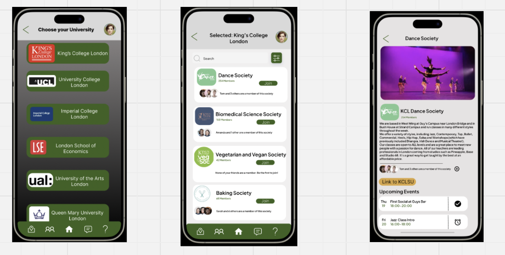

LLM Evaluation
I develop evaluation workflows and scoring criteria to review the quality of AI-assisted diagnosis and guidance.
Hi, I’m Sydney
AI Application EngineerLLM Evaluation & ObservabilityFoxconn Industrial Internet (Fii) · CESBG · HPC Platform
I build LLM applications for hardware failure analysis and repair guidance, with a focus on evaluation, production observability, and internal tools. I make AI outputs easier to assess and AI systems easier for teams to monitor and use.
A little about meConnecting human insight, data & AI engineering
Explore my workCURRENT FOCUS / FII · CESBG · HPC Platform
–Present
I develop evaluation workflows and scoring criteria to review the quality of AI-assisted diagnosis and guidance.
I build monitoring and analytics tools to help teams understand service behavior and investigate issues.
I turn backend workflows into self-service interfaces with progress tracking and clear status information.
SELECTED PROJECTS / THREE LENSES. ONE CURIOUS MIND.
Before my current role in AI engineering, I explored problems through user research, data analysis, and software development. These selected projects reflect the perspective I bring to my work today.
Expand a field to explore a selected project.
Turning open-source activity into an accessible archive and interactive view of emerging tech trends.
WORK Automated data pipeline & interactive Streamlit dashboard

Helping international students navigate London life, find support, and connect with peers.
MY ROLE UX research & wellbeing interface design
CONTRIBUTION Five in-depth interviews informing the mental health module
Using behavior and search data to improve the discoverability of a regional tourism website.
MY ROLE Analytics, keyword research & content optimization
OUTCOME 19.67% improvement in CTR within one month